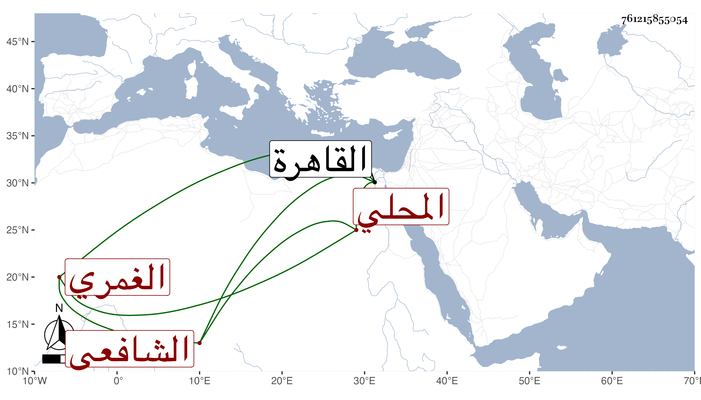

0902Sakhawi.DawLamic.ITO20230111-ara1.EIS1600.761215855054
Biography ID: 761215855054
342
أحمد بن محمد بن شعيب الشهاب الغمري ثم المحلي الشافعي الآتي أبوه ويعرف بابن شعيب . ممن سمع مني وكذا سمع على الشاوي والقمصي وآخرين ولازم ولد شيخه أبا العباس الغمري وصار مقصودا في كثير من حوائج أهل تلك الغواحي ، وحج غير مرة منها في سنة ست وخمسين وتكرر قدومه مع المشار إليه القاهرة ، وتعلل فيها آخر قدماته أزيد من شهر وحمل منها وهو ضعيف جدا إلى شر نبابل فأقام بها يسيرا ثم مات في يوم الأربعاء تاسع عشر رجب سنة تسع وثمانين وقد جاز الستين وخلت مبلغأ ما كان الظن فيه القدرة عليه وحصل التأسف على فقده فقد كان عالي الهمة دربا عاقلا من أجل أصحاب المشار إليه وأنفعهم له كما أن ولده كان من أصلح أصحاب أبيه رحمهم الله وإيانا .
